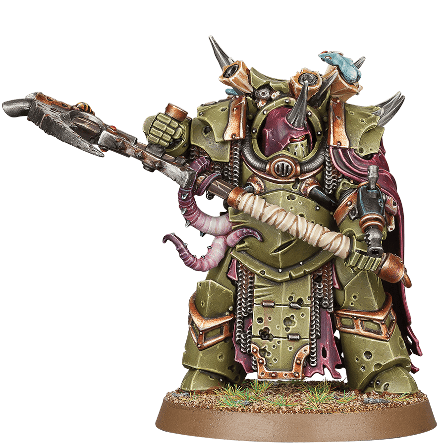

Imperio del Hombre
El Imperio de la Humanidad es el mayor imperio estelar de la galaxia y se extiende desde la Sagrada Terra hasta las inmediaciones de la Franja Este y las distantes Estrellas del Halo. Está compuesto por un millón de mundos e innumerables almas que dirigir, gobernadas por el Dios Emperador de la Humanidad.
Adeptus Astartes (Marines Espaciales)
Los Marines Espaciales son superguerreros genéticamente modificados, la élite del ejército del Imperio. Son conocidos por su versatilidad en el campo de batalla, adaptándose a cualquier amenaza.

Templarios Negros
Todos los hermanos de batalla de los Templarios Negros creen en la divinidad del Emperador y hacen juramentos de purga y venganza. Conceptos como la misericordia y el perdón son un anatema para ellos, y ven como su misión personal aplastar sin dudarlo a todos los herejes, mutantes, brujas, xenos y no creyentes.
Ángeles Sangrientos
Los Ángeles Sangrientos se cuentan entre los Marines Espaciales más nobles y honorables, con una historia de lealtad inquebrantable al Imperium que se remonta a la Gran Cruzada. Se esfuerzan sin vacilar por proteger a los inocentes, pero su heroica reputación oculta una espantosa maldición. Cada hermano de batalla lucha día y noche para resistir esta aflicción y mantenerla oculta a los extraños.
Ángeles Oscuros
Defensores acérrimos del Imperium, la adusta y melancólica hermandad de los Ángeles Oscuros es despiadada en el ataque y obstinada en la defensa. También están envueltos en el misterio y el mito, atesorando secretos tan vergonzosos que incluso muchos en sus propias filas los ocultan.
Vigilantes de la Muerte
Los Vigilantes de la Muerte concentran a los Marines Espaciales más especializados, guerreros veteranos provenientes de todos los demás Capítulos y unidos en un solo propósito. Su tarea es cazar al xenos dondequiera que aparezca, empleando tecnología prohibida y tácticas poco ortodoxas para salvaguardar el reino del Emperador de la marea xenos.
Caballeros Grises
Dondequiera que los daemons atraviesan el velo de la realidad, dondequiera que los poderes de la disformidad se manifiestan en forma de entidades maléficas o posesiones abominables, los Caballeros Grises atacan. Estos psíquicos Marines Espaciales, ataviados con armaduras plateadas de la luna de Titán, son desinteresados guerreros que lo arriesgan todo para contener la amenaza de la condenación eterna de la humanidad.
Lobos Espaciales
Guerreros feroces del mundo letal de Fenris, los Lobos Espaciales son intrépidos, tenaces y poseen un hambre insaciable de batalla. Con un temperamento como la ira de una tormenta de invierno, cazan a los que desafían al Imperium con una furia rápida similar a un rayo de fuego crepitante.

Astra Militarum (Guardia Imperial)
El Astra Militarum es un instrumento contundente de violencia, forjado a escala galáctica. La infantería masiva y los tanques estruendosos sirven como un escudo viviente para el reino del Emperador y como un mazo imparable con el que aplastar a sus enemigos. Estos leales ejércitos han servido al Imperium durante diez mil años, sacrificando incontables vidas sin rendir siquiera un solo mundo.
Adeptus Mechanicus
El Adeptus Mechanicus valora el conocimiento por encima de todas las cosas y derramará océanos de sangre y aceite en su interminable cruzada para adquirir conocimientos perdidos y reliquias antiguas. Los ejércitos de cíborgs del Culto a la Máquina manejan armas tecnológicas extrañas y arcanas de un gran poder, fabricadas y administradas por los extraños tecnosacerdotes del Omnissiah.

Adeptas Sororitas
Las Adepta Sororitas son guerreras poseedoras de una fe inquebrantable. Purgan a sus enemigos del campo con el fuego rugiente y la espada, mostrando su fervorosa devoción al Dios Emperador y al Culto Imperial. Las Hermanas de Batalla son muy hábiles en tiroteos de corto alcance, derribando al enemigo con ráfagas furiosas mientras sus altísimos himnarios resuenan sobre los gritos de los moribundos.
Adeptus Custodes
Los Adeptus Custodes fueron los primeros y más grandes de los supersoldados diseñados por el Emperador. Cada uno es un guerrero de poder superlativo y resistencia sobrehumana, un estratega y táctico que rivaliza con los más grandes generales y muchas tropas más. Son ejemplares de leyenda casi inmortales, que no se detienen ante nada para defender al Emperador y su mundo trono.
Caos
El Caos es una fuerza maligna dirigida por los cuatro dioses del caos, los cuales buscan la destrucción del Imperio y la corrupción de las almas mortales del universo.
Adeptus Tenebris (Marines del Caos)
Son los héroes caídos del Imperium, guerreros sobrehumanos que vendieron sus almas a cambio de la promesa de poder otorgado por los Dioses Oscuros. Son los Astartes Herejes, los Marines Espaciales del Caos. Desde el Ojo del Terror, el Torbellino, la Gran Fisura y mil mundos más, han llevado el nombre de su pálido Emperador a un lugar de vergüenza, siendo el enigma de su existencia un insulto a toda vida y esperanza en la galaxia.

Guardia de la Muerte
La Guardia de la Muerte es la Legión Traidora más favorecida por Nurgle, el Dios del Caos de la plaga y la desesperación. Dedicados a propagar las espantosas infecciones del Padre de la Plaga por los mundos del Imperium, estos mórbidos Marines Espaciales son vectores de plaga vivos dotados de una resistencia grotesca.
Los Mil Hijos
Los Mil Hijos son una Legión Traidora de hechiceros locos que juraron lealtad a Tzeentch, el Dios del Caos de la magia y el cambio. Estos sobrenaturales Marines Espaciales gobiernan sobre séquitos de mutantes retorcidos y autómatas arcanos, lanzando complots laberínticos para provocar la destrucción del Imperium.
Devoradores de Mundos
Los Devoradores de Mundos atacan a sus enemigos con espadas sierra incrustadas de sangre, gritando alabanzas a Khorne, el Dios del Caos de la sangre y el odio. Esta Legión Traidora de Marines Espaciales enloquecidos no se preocupa por nada más que matar, reclamando cráneos de los campeones más poderosos del Imperium.

Demonios del Caos
Ningún enemigo del Imperium es más maligno ni más terrible que los Deminios del Caos, los innumerables soldados de infantería de los Poderes Ruinosos. Engendradas en las profundidades de la disformidad, estas legiones de otro mundo adoptan formas extraídas de las pesadillas más oscuras y los deseos más crueles de las mentes mortales, y no se detendrán ante nada para ver la realidad misma arrodillada ante sus Dioses.
Xenos
Los Xenos son las razas alienígenas que desafían al Imperio y compiten por el dominio de la galaxia.
Aeldari
Antaño gobernantes de un imperio galáctico, los Aeldari ahora son un pueblo fragmentado con solo los restos de su antiguo poder. Los llamados Asuryani han surcado las estrellas durante milenios en enormes naves espaciales conocidas como mundos astronave: nómadas altivos que luchan por sobrevivir con su sabiduría psíquica, tecnología maravillosa y habilidades impresionantes.
Drukhari
Los Drukhari son una civilización sádica y saqueadora de asesinos Aeldari que se alimentan de la angustia y el sufrimiento de sus víctimas. Siempre hambrientos de esclavos, botines y entretenimiento, lanzan incursiones relámpago sobre enemigos desprevenidos antes de desaparecer en sus guaridas en Commorragh, la retorcida ciudad inferior que acecha bajo la realidad en los rincones más oscuros de la Telaraña.
Tiranidos
Los Tiránidos han invadido la galaxia desde más allá del vacío intergaláctico, sus flotas colmena se deslizan como zarcillos en cada sector y sistema. Impulsados por los imperativos de la todopoderosa Mente Colmena, sus enjambres barren mundo tras mundo en una marea viva de máquinas biológicas de matar, devorando hasta la última pizca de biomasa a su paso.
Ligas de los Votann
Las Ligas de los Votann las forman mineros expertos, comerciantes pragmáticos y guerreros resistentes, que manejan tecnologías avanzadas perdidas por el Imperio. Los clones que integran la Familia pueblan las Ligas y son duros de cuerpo y mente, sus ejércitos salen del núcleo galáctico para reclamar recursos y saldar deudas por cualquier medio necesario.
Necrones
Tras eones de hibernación, las legiones de androides inmortales de los Necrones se alzan por toda la galaxia. Ejércitos de metal viviente marchan desde tumbas de estasis desmoronadas, armados con tecnología arcana y casi impermeables al daño. Gobernados por Líderes Supremos maníacos que intentan restaurar su antiguo imperio, los Necrones le recordarán a la galaxia su ira fría y aterradora.
Orkos
Duros, brutales y numerosos sin límite, los Orkos son una de las especies más peligrosas de la galaxia. Sus bandas de guerreros merodeadores y hordas colosales han amenazado a la humanidad desde antes del amanecer del Imperium, ya que los Orkos prosperan en la batalla y el caos, vagando por las estrellas en busca de una buena pelea.
Imperiop T'au
Dinámicos y sumamente confiados, los T'au han establecido un poderoso imperio de innumerables especies que trabajan en pos de su filosofía del Bien Supremo. Esta civilización que una vez fue pequeña ahora se extiende como un reguero de pólvora por las estrellas, sus esfuerzos diplomáticos están respaldados por ejércitos de armaduras de batalla avanzadas y auxiliares xenos, mientras busca mostrar a sus enemigos que están equivocados.